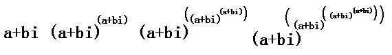
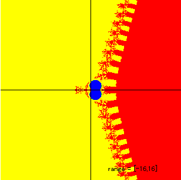
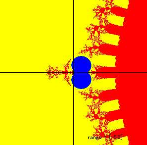
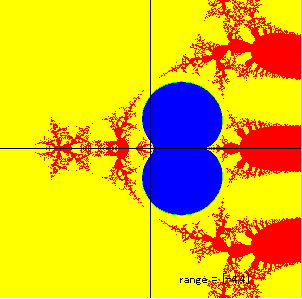
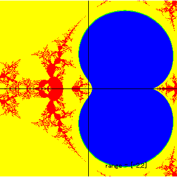
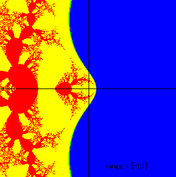
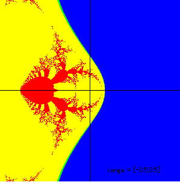
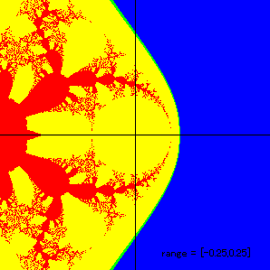
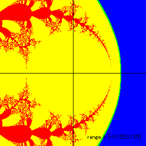

Iterating f(z)=(a+bi)^z
Graph of iterating the function f(z)=(a+bi)^z.
The red point is z=a+bi (a,b:real). The green points are generated by iterating the function.
The points are defined as the followings.
f(z,n)=NestedPower(z,n). (z=a+bi)
f(z,1)=z, f(z,2)=z^z, f(z,3)=z^(z^z), f(z,4)=z^(z^(z^z)),......

I made the applet inspired by Don Cohen's
idea of iterating the function f(z)=i^z.
See the bottom of his page at
http://www.mathman.biz/
Fractals by f(z)=(a+bi)^z
Method
I iterated the complex function f(z)=(a+bi)^z for 100 times.
z(1)=(a+bi), z(2)=(a+bi)^(a+bi), z(3)=(a+bi)^((a+bi)^(a+bi)),........
for each a and b in the complex plane.
Since the function has multiple value. I only took primary value of the
function. I tried to find the condition of convergence.
About the Pictures
Points in the blue area leads to convengent sequences, red area are
divergent, and yellow area can be either (not determined by the program)
Blue Area
There exists more than ten z(n)s in {z(1),z(2),,,,z(100)} such that abs(z(n)-z(n+1))<0.01
Red Area
There exists a z(n) such that abs(z(n))>1000 in {z(1),z(2),,,,z(100)}
Yellow Area
Not determined
|

|

|
|

|

|
|

|

|
|

|

|
Updated Feb-22,1998